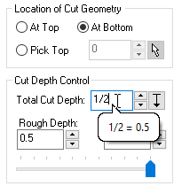
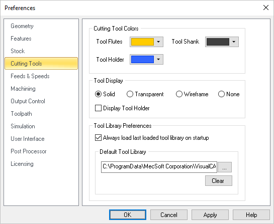
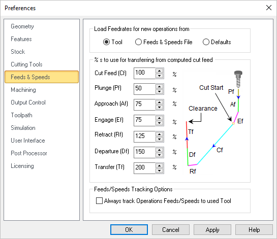
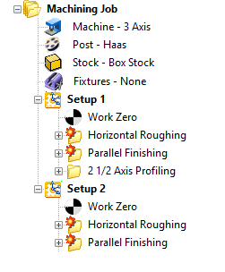

|
<< Click to Display Table of Contents >> Navigation: VisualCAM FAQs > General Training > How to: Tool Related Preferences |
Listed below are the CAM Preferences that are related to Tools and Tool Libraries:
1.Locate the CAM Preferences icon to the right of the Program tab and select it.
2.Select the User Interface item from the left. Here are a couple of Preferences that will help you with the tools related dialogs:
Show context ToolTips
Check this box to display Context ToolTips when the mouse moves over a parameter in a dialog. A definition of the parameter will pop-up automatically. Note that Context ToolTips may not be available for ALL dialogs. You can also set the ToolTip Delay in seconds. This is the amount of time it takes to display the Context ToolTip when the mouse activate it.
|
Show Expressions in Tooltip
You can enter expressions in any dialog field that expects a numerical value and the value will be computed and entered automatically. Check this box to pop-up the results of any expressions in a ToolTip balloon. An example is shown below.  Show Expressions in ToolTip |
3.Select the Cutting Tools item from the left.
 CAM Preferences > Cutting Tools |
4.You can select the Default Tool Library to load for new part files. You can also check the box to Load the last loaded tool library on startup. This will ensure that your Tool Library loads every time the program runs.
5.You can also set Tool related colors on this dialog.
6.Now select the Feeds & Speeds section from the left.
7.Here you can decide if you want default Feeds & Speeds loaded from the Tool for new operations. If you set this to Tool and define your Speeds & Feeds for each of your tools, you can be sure those Feeds & Speeds are being used when a new operation is created that uses that tool.
 CAM Preferences > Feeds & Speeds |
8.You can also set the % of the computed Cut Feed to use for the various types of transfer motions. For example, in the Feeds & Speeds Calculator (displayed when you select Load from File from either the Create/Select Tools dialog or from the Feeds & Speeds tab of any operation type) a Cut Feed value is calculated and suggested. These percentages listed in this CAM Preferences dialog will determine how much of that Cut Feed value is used for each of they remaining tool motion types.
9.You can also check the box to Always track Operations Feeds/Speeds to used Tool. When this is checked, changing the feeds/speeds parameters of a tool and saving the edits, will automatically update the feeds/speeds on each operation that utilizes this tool in addition to marking the operations as dirty.
 |